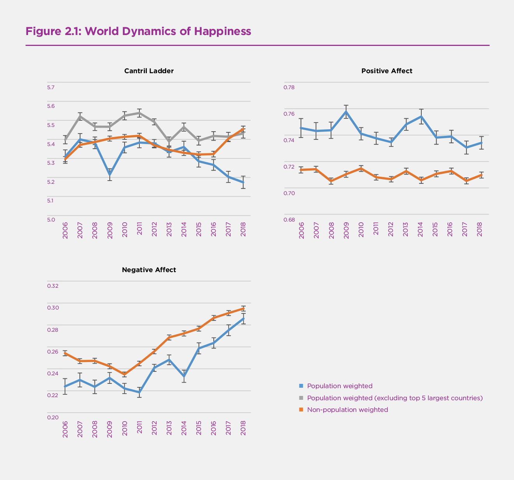
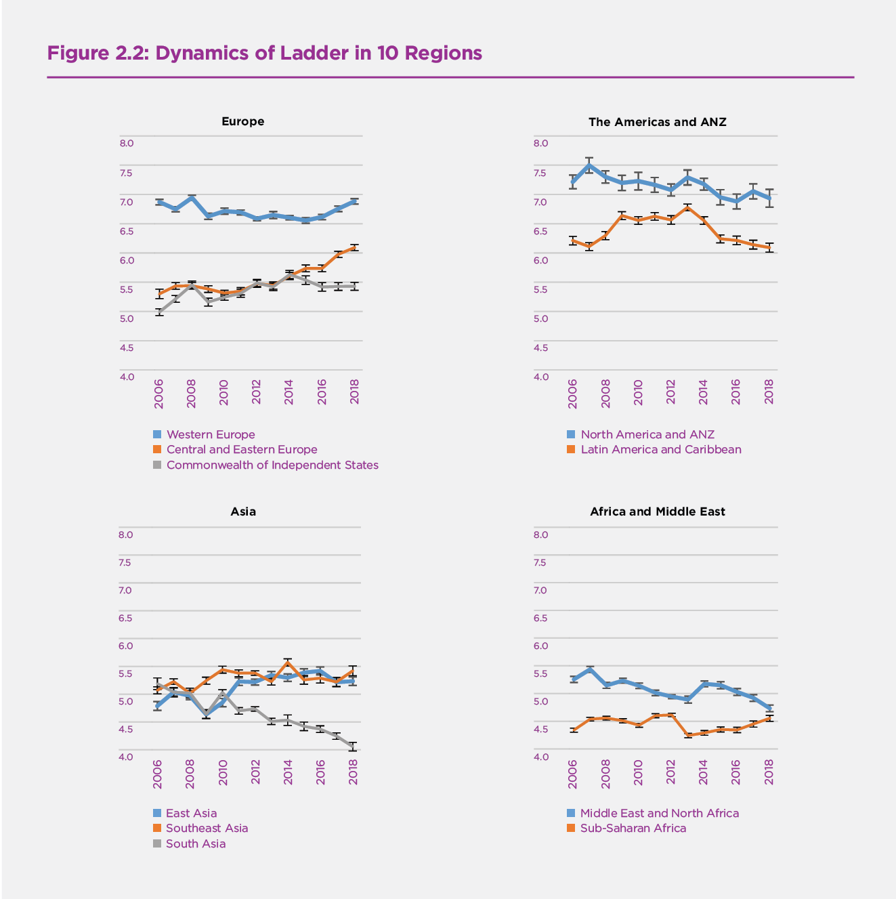
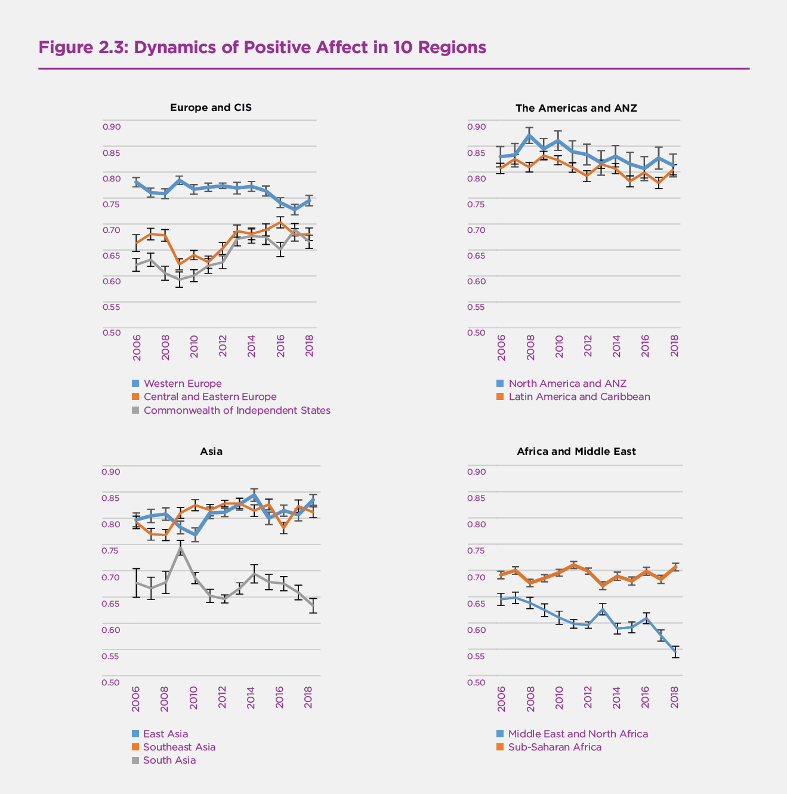
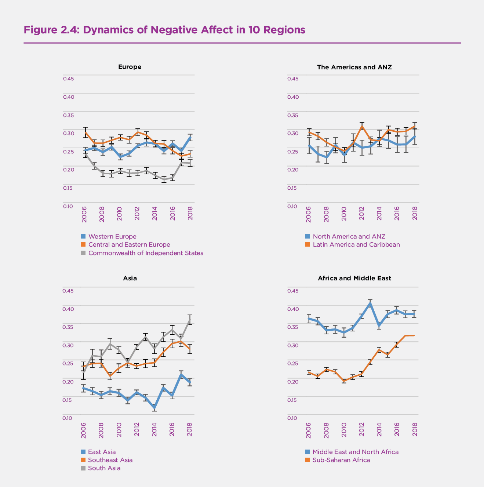
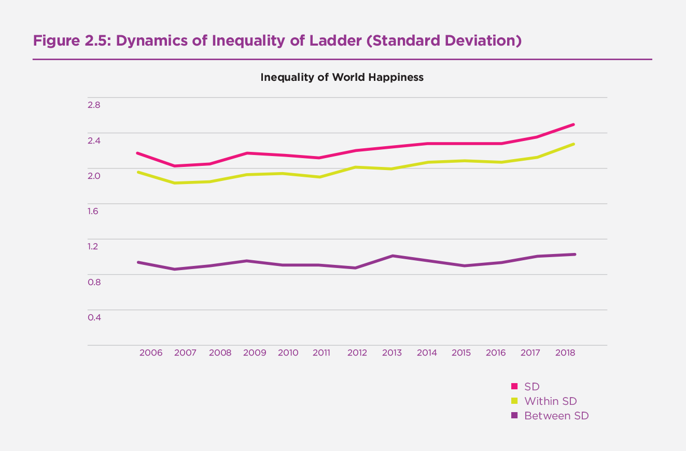
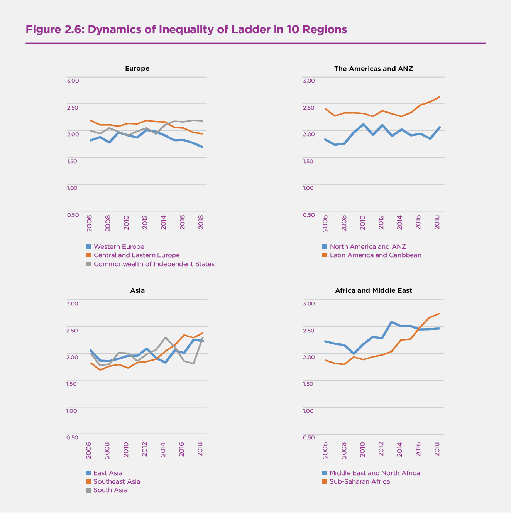
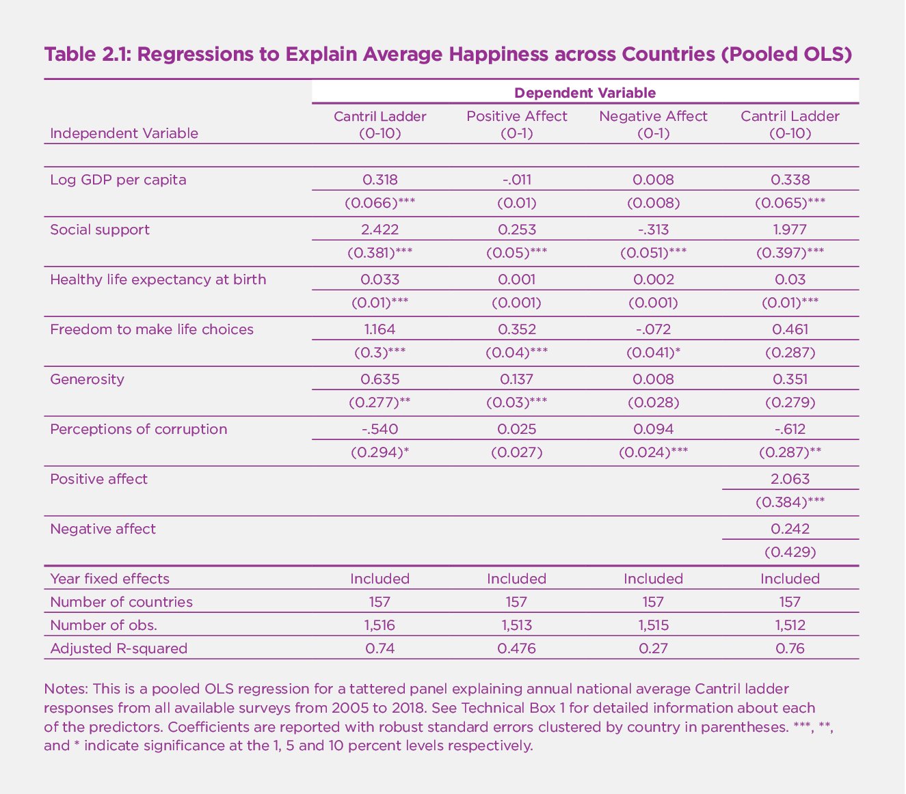
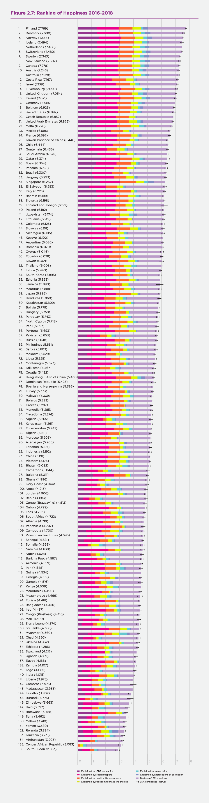
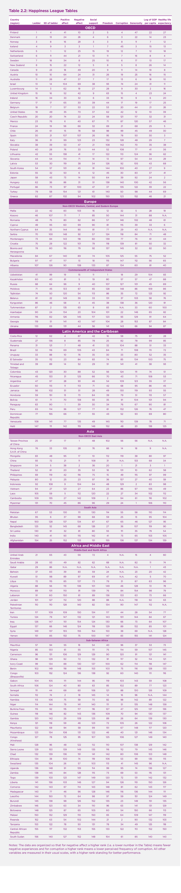
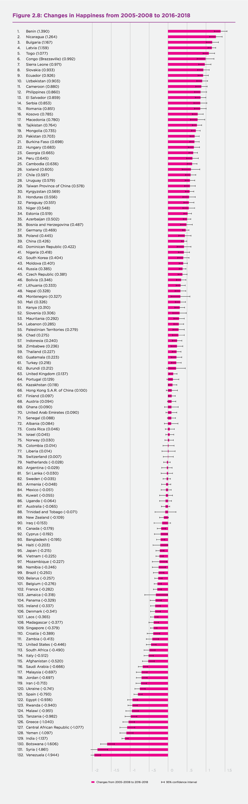

Introduction
In the first World Happiness Report we surveyed a wide range of available data. The Gallup World Poll surveys covering 2005-2011 gave the widest international coverage. Now, seven years later, we have twice as many years of data from the Gallup World Poll, giving us a sufficient time span to consider how our principal measures of happiness, and their main supporting factors, have evolved from 2005 through 2018.
The chapter therefore starts with a presentation of the evolution of annual data at the global and regional levels for three key happiness measures – life evaluations, positive affect, and negative affect over the whole course of the Gallup World Poll from 2005 through 2018. For all our plots of annual data, we combine the surveys in 2005 and 2006, because of the small number of countries in the first year.[1]
The title of this chapter is intentionally ambiguous, designed to document not just the year-to-year changes in happiness, but also to consider how happiness has been affected by changes in the quality of government. After our review of how world happiness has been changing since the start of the Gallup World Poll, we turn to present our rankings and analysis of the 2016-2018 average data for our three measures of subjective well-being plus the six main variables we use to explain their international differences. See Technical Box 1 for the precise definitions of all nine variables.
For our country-by-country analysis of changes, we report changes from 2005-2008 to 2016-2018, grouping years together to provide samples of sufficient size. We shall also provide estimates of the extent to which each of the six key explanatory variables contributed to the actual changes in life evaluations from 2005-2008 to 2016-2018.
We then complete the chapter with our latest evidence on the links between changes in the quality of government, by a variety of measures, and changes in national average life evaluations over the 2005-2018 span of years covered by the Gallup World Poll.
The Evolution of World Happiness 2005-2018
In recent previous reports, we presented bar charts showing for the world as a whole, and for each of 10 global regions, the distribution of answers to the Cantril ladder question asking respondents to value their lives today on a 0 to 10 scale, with the worst possible life as a 0 and the best possible life as a 10. This gave us a chance to compare happiness levels and inequality in different parts of the world. Population-weighted average life evaluations differed significantly among regions, being highest in North America and Oceania, followed by Western Europe, Latin America and the Caribbean, Central and Eastern Europe, the Commonwealth of Independent States, East Asia, Southeast Asia, The Middle East and North Africa, Sub-Saharan Africa and South Asia, in that order. We found that well-being inequality, as measured by the standard deviation of the distributions of individual life evaluations, was lowest in Western Europe, Northern America and Oceania, and South Asia; and greatest in Latin America, Sub-Saharan Africa, and the Middle East and North Africa.[2]
This year we shift our focus from the levels and distribution of well-being to consider their evolution over the years since the start of the Gallup World Poll. We now have twice as many years of coverage from the Gallup World Poll as were available for the first World Happiness Report in 2012. This gives us a better chance to see emerging happiness trends from 2005 through 2018, and to investigate what may have contributed to them.
First we shall show the population-weighted trends,[3] based on annual samples for the world as a whole, and for ten component regions, for each of our three main happiness measures: life evaluations, positive affect, and negative affect. As described in Technical Box 1, the life evaluation used is the Cantril Ladder, which asks survey respondents to place the status of their lives on a “ladder” scale ranging from 0 to 10, where 0 means the worst possible life and 10 the best possible life. Positive affect comprises the average frequency of happiness, laughter and enjoyment on the previous day, and negative affect comprises the average frequency of worry, sadness and anger on the previous day. The affect measures thus lie between 0 and 1.
The three panels of Figure 2.1 show the global and regional trajectories for life evaluations, positive affect, and negative affect. The whiskers on the lines in all figures indicate 95% confidence intervals for the estimated means. The first panel shows the evolution of life evaluations measured three different ways. Among the three lines, two lines cover the whole world population, with one of the two weighting the country averages by each country’s share of the world population, and the other being an unweighted average of the individual national averages. The unweighted average is always above the weighted average, especially after 2015, when the weighted average starts to drop significantly, while the unweighted average starts to rise equally sharply. This suggests that the recent trends have not favoured the largest countries, as confirmed by the third line, which shows a population-weighted average for all countries in the world except the five countries with the largest populations – China, India, Indonesia, the United States and Russia. The individual trajectories for these largest countries are shown in Figure 1 of Statistical Appendix 1, while their changes from 2005-2008 to 2016-2018 are shown later in this chapter, in Figure 2.8. Even with the largest countries removed, the population-weighted average does not rise as fast as the unweighted average, suggesting that smaller countries have had greater happiness growth since 2015 than have the larger countries.
Figure 2.1 World Dynamics of Happiness

The second panel of Figure 2.1 shows positive affect over the same period as used in the first panel. There is no significant trend in either the weighted or unweighted series. The population-weighted series show slightly but significantly more positive affect than does the unweighted series, showing that positive affect is on average higher in the larger countries.
The third panel of Figure 2.1 shows negative affect, which follows a quite different path from positive affect. The population-weighted world frequency of negative affect in 2005-2006 is about one-third of the frequency of positive affect. Negative affect is lower for the weighted series, just as positive affect is greater. Both the weighted and unweighted series show significant upward trends in negative affect starting in 2010 or 2011. The global weighted measure of negative affect rises by more than one-quarter from 2010 to 2018, from a frequency of 22% to 28%. This global total, striking as it is, masks a great deal of difference among global regions, as will be shown later in Figure 2.4.
The four panels of Figure 2.2 show the evolution of life evaluations in ten global regions, divided into four continental groupings.[4] In each case the averages are adjusted for sampling and population weights. The first panel has three lines, one each for Western Europe, Central and Eastern Europe, and the Commonwealth of Independent States (CIS). All three groups of countries show average life evaluations that fell in the wake of the 2007-2008 financial crash, with the falls being greatest in Western Europe, then in the CIS, with only a slight drop in Central and Eastern Europe. The post-crash happiness recovery started first in the CIS, then in Central and Eastern Europe, while in Western Europe average life evaluations only started recovering in 2015. CIS evaluations rose almost to the level of those in Central and Eastern Europe by 2014, but have since fallen, while those in Central and Eastern Europe have continued to rise, parallelling the post-2015 rise in Western Europe. The overall pattern is one of happiness convergence among the three parts of Europe, but with a recent large gap opening up between Central and Eastern Europe and the CIS.
The second panel of Figure 2.2 covers the Americas. The upper line shows the North America+ANZ country grouping comprising the United States, Canada, Australia and New Zealand, with about 80% of its population in the United States. The weighted average, heavily influenced by the U.S. experience, has fallen more than 0.4 points from its pre-crisis peak to 2018, about on a par with Western Europe. The lower line shows that average happiness in Latin America and the Caribbean rose without much pause until a peak in 2013, with a continuing decline since then.
Figure 2.2 Dynamics of Ladder in 10 Regions

The third panel shows quite different evolutions of life evaluations in the three parts of Asia, with South Asia showing a drop of a full point, from 5.1 to 4.1 on the 0 to 10 scale, driven mainly by the experience of India, given its dominant share of South Asian population. Southeast Asia and East Asia, in contrast, have had generally rising life evaluations over the period. Southeast and South Asia had the same average life evaluations in 2005-2006, but the gap between them was up to 1.3 points by 2018. Happiness in East Asia was worst hit in the economic crisis years, but has since posted a larger overall gain than Southeast Asia to end the period at similar levels.
Finally, the fourth panel of Figure 2.2 contains the Middle East and North Africa (MENA) and Sub-Saharan Africa (SSA), with MENA dropping fairly steadily, and SSA with no overall trend. In all regions there is a variety of country experiences underlying the averages reported in Figure 2.2. The country-by-country data are reported in the on-line statistical data, and the country changes from 2005-2008 to 2016-2018 shown later in Figure 2.8 will help to reveal the national sources of the regional trends.
The four panels of Figures 2.3 and 2.4 have the same structure as Figure 2.2, with life evaluations being replaced by positive affect in Figure 2.3 and by negative affect in Figure 2.4. Figure 2.3 shows that positive affect is generally falling in Western Europe, and falling and then rising in both Central and Eastern Europe and the CIS, achieving its highest levels at the end of the period. This pattern of partial convergence of positive affect between the two parts of Europe leaves positive affect still significantly more frequent in Western Europe. Within the Americas, the incidence of positive affect is generally falling, at about the same rates in both the NA-ANZ region (with most of the population weight being on the United States), and in Latin America. Positive affect is fairly stable and at similar levels in East and Southeast Asia, while starting lower and falling significantly in South Asia. There are no significant trends in positive affect in Sub-Saharan Africa, while in the Middle East and North Africa (MENA), it starts lower and follows a declining trend.
Figure 2.3 Dynamics of Positive Affect in 10 Regions

Figure 2.4 shows that negative affect is generally increasing in Western Europe, generally lower and falling since 2012 in Central and Eastern Europe, and also falling in the CIS until 2015, but rising thereafter. Negative affect thus shows divergence rather than the convergence within Europe seen for life evaluations and positive affect. There is a continuing post-crisis increase in the incidence of negative affect in Latin America as well as in the NA-ANZ region. Within Asia the frequency of negative affect rises most sharply in Southeast Asia, and by only slightly less in South Asia, while falling in East Asia until 2014 and then rising thereafter. In the Middle East and North Africa, the frequency at first falls and then rises, but within a narrow range. The biggest increases in the frequency of negative affect are found in Sub-Saharan Africa, with the 2018 frequency greater by half than in 2010. Thus all global regions except for Central and Eastern Europe have had significantly increasing negative affect in recent years, with some variations among regions in starting dates for the increases.
Figure 2.4 Dynamics of Negative Affect in 10 Regions

The Evolution of Happiness Inequality
In this section we focus our attention on changes in the distribution of happiness. There are at least two reasons for us to do this. First, it is important to consider not just average happiness in a community or country, but also how it is distributed. Second, it is done to encourage those interested in inequality to consider happiness inequality as a useful umbrella measure. Most studies of inequality have focused on inequality in the distribution of income and wealth,[5] while in Chapter 2 of World Happiness Report 2016 Update we argued that just as income is too limited an indicator for the overall quality of life, income inequality is too limited a measure of overall inequality.[6] For example, inequalities in the distribution of health[7] have effects on life satisfaction above and beyond those flowing through their effects on income. We and others have found that the effects of happiness equality are often larger and more systematic than those of income inequality. For example, social trust, often found to be lower where income inequality is greater, is even more closely connected to the inequality of subjective well-being.[8]
Figure 2.5 shows the evolution of global inequality of happiness, as measured by the standard deviation of the distribution of the individual life evaluations on the 0 to 10 scale, from 2005-2006 to 2018. The upper line illustrates the trend of overall inequality, showing a clear increase since 2007. We further decompose overall inequality into two components: one for within-country inequality, and another for between-country inequality. The figure shows that inequality within countries follows the same increasing trend as overall inequality, while between-country inequality has increased only slightly. In summary, global happiness inequality, measured by the standard deviation of Cantril Ladder, has been increasing, driven mainly by increasing happiness inequality within countries.
Figure 2.5 Dynamics of Inequality of Ladder (Standard Deviation)

Figure 2.6 Dynamics of Inequality of Ladder in 10 Regions

Figure 2.6 shows that the inequality of happiness has evolved quite differently in the ten global regions. The inequality of happiness rose between 2006 and 2012 in Western Europe, and has been falling steadily since, while in Central and Eastern Europe it has followed a similar path but starting from a higher starting point and falling faster. Inequality in the CIS region follows somewhat the reverse pattern, being stable at first and rising since 2013. In Latin America, inequality was steady until 2014 and has risen since, while rising until 2010 in the US-dominated NA+ANZ region and being fairly constant since. Inequality in Southeast Asia has been rising throughout the period since 2010, while in the rest of Asia rising much less. Inequality in Sub-Saharan Africa has risen on the steep post-2010 path similar to that in Southeast Asia. In the MENA region, inequality rose from 2009 to 2013, while being stable since.
Ranking of Happiness by Country
Now we turn to consider life evaluations covering the 2016-2018 period, and to present our annual country rankings. These rankings are accompanied by our latest attempts to show how six key variables contribute to explaining the full sample of national annual average scores over the whole period 2005-2018. These variables are GDP per capita, social support, healthy life expectancy, freedom, generosity, and absence of corruption. Note that we do not construct our happiness measure in each country using these six factors – the scores are instead based on individuals’ own assessments of their lives, as indicated by the Cantril ladder. Rather, we use the six variables to explain the variation of happiness across countries. We shall also show how measures of experienced well-being, especially positive affect, supplement life circumstances in explaining higher life evaluations.
In Table 2.1 we present our latest modeling of national average life evaluations and measures of positive and negative affect (emotion) by country and year.[9] For ease of comparison, the table has the same basic structure as Table 2.1 in several previous editions of the World Happiness Report. The major difference comes from the inclusion of data for 2018, and the resulting changes to the estimated equation are very slight.[10] There are four equations in Table 2.1. The first equation provides the basis for constructing the sub-bars shown in Figure 2.7.
The results in the first column of Table 2.1 explain national average life evaluations in terms of six key variables: GDP per capita, social support, healthy life expectancy, freedom to make life choices, generosity, and freedom from corruption.[11] Taken together, these six variables explain almost three-quarters of the variation in national annual average ladder scores among countries, using data from the years 2005 to 2018. The model’s predictive power is little changed if the year fixed effects in the model are removed, falling from 0.740 to 0.735 in terms of the adjusted R-squared.
The second and third columns of Table 2.1 use the same six variables to estimate equations for national averages of positive and negative affect, where both are based on answers about yesterday’s emotional experiences (see Technical Box 1 for how the affect measures are constructed). In general, the emotional measures, and especially negative emotions, are differently, and much less fully, explained by the six variables than are life evaluations. Per-capita income and healthy life expectancy have significant effects on life evaluations, but not, in these national average data, on either positive or negative affect. The situation changes when we consider social variables. Bearing in mind that positive and negative affect are measured on a 0 to 1 scale, while life evaluations are on a 0 to 10 scale, social support can be seen to have similar proportionate effects on positive and negative emotions as on life evaluations. Freedom and generosity have even larger influences on positive affect than on the ladder. Negative affect is significantly reduced by social support, freedom, and absence of corruption.
In the fourth column we re-estimate the life evaluation equation from column 1, adding both positive and negative affect to partially implement the Aristotelian presumption that sustained positive emotions are important supports for a good life.[12] The most striking feature is the extent to which the results buttress a finding in psychology that the existence of positive emotions matters much more than the absence of negative ones.[13] Positive affect has a large and highly significant impact in the final equation of Table 2.1, while negative affect has none.
As for the coefficients on the other variables in the final equation, the changes are material only on those variables – especially freedom and generosity – that have the largest impacts on positive affect. Thus we infer that positive emotions play a strong role in support of life evaluations, and that much of the impact of freedom and generosity on life evaluations is channeled through their influence on positive emotions. That is, freedom and generosity have large impacts on positive affect, which in turn has a major impact on life evaluations. The Gallup World Poll does not have a widely available measure of life purpose to test whether it too would play a strong role in support of high life evaluations. However, data from large samples of UK do suggest that life purpose plays a strongly supportive role, independent of the roles of life circumstances and positive emotions.
Table 2.1: Regressions to Explain Average Happiness across Countries (Pooled OLS)

Notes: This is a pooled OLS regression for a tattered panel explaining annual national average Cantril ladder responses from all available surveys from 2005 to 2018. See Technical Box 1 for detailed information about each of the predictors. Coefficients are reported with robust standard errors clustered by country in parentheses. ***, **, and * indicate significance at the 1, 5 and 10 percent levels respectively.
Technical Box 1: Detailed information about each of the predictors in Table 2.1
- GDP per capita is in terms of Purchasing Power Parity (PPP) adjusted to constant 2011 international dollars, taken from the World Development Indicators (WDI) released by the World Bank on November 14, 2018. See Statistical Appendix 1 for more details. GDP data for 2018 are not yet available, so we extend the GDP time series from 2017 to 2018 using country-specific forecasts of real GDP growth from the OECD Economic Outlook No. 104 (Edition November 2018) and the World Bank’s Global Economic Prospects (Last Updated: 06/07/2018), after adjustment for population growth. The equation uses the natural log of GDP per capita, as this form fits the data significantly better than GDP per capita.
- The time series of healthy life expectancy at birth are constructed based on data from the World Health Organization (WHO) Global Health Observatory data repository, with data available for 2005, 2010, 2015, and 2016. To match this report’s sample period, interpolation and extrapolation are used. See Statistical Appendix 1 for more details.
- Social support is the national average of the binary responses (either 0 or 1) to the Gallup World Poll (GWP) question “If you were in trouble, do you have relatives or friends you can count on to help you whenever you need them, or not?”
- Freedom to make life choices is the national average of binary responses to the GWP question “Are you satisfied or dissatisfied with your freedom to choose what you do with your life?”
- Generosity is the residual of regressing the national average of GWP responses to the question “Have you donated money to a charity in the past month?” on GDP per capita.
- Perceptions of corruption are the average of binary answers to two GWP questions: “Is corruption widespread throughout the government or not?” and “Is corruption widespread within businesses or not?” Where data for government corruption are missing, the perception of business corruption is used as the overall corruption-perception measure.
- Positive affect is defined as the average of previous-day affect measures for happiness, laughter, and enjoyment for GWP waves 3-7 (years 2008 to 2012, and some in 2013). It is defined as the average of laughter and enjoyment for other waves where the happiness question was not asked. The general form for the affect questions is: Did you experience the following feelings during a lot of the day yesterday? See pp. 1-2 of Statistical Appendix 1 for more details.
- Negative affect is defined as the average of previous-day affect measures for worry, sadness, and anger for all waves.
Our country rankings in Figure 2.7 show life evaluations (the average answer to the Cantril ladder question, asking people to evaluate the quality of their current lives on a scale of 0 to 10) for each country, averaged over the years 2016-2018. Not every country has surveys in every year; the total sample sizes are reported in the statistical appendix, and are reflected in Figure 2.7 by the horizontal lines showing the 95% confidence intervals. The confidence intervals are tighter for countries with larger samples. To increase the number of countries ranked, we also include three countries that did have surveys in 2015 but have not had one since.[14]
The overall length of each country bar represents the average ladder score, which is also shown in numerals. The rankings in Figure 2.7 depend only on the average Cantril ladder scores reported by the respondents, and not on the values of the six variables that we use to help account for the large differences we find.
Each of these bars is divided into seven segments, showing our research efforts to find possible sources for the ladder levels. The first six sub-bars show how much each of the six key variables is calculated to contribute to that country’s ladder score, relative to that in a hypothetical country called Dystopia, so named because it has values equal to the world’s lowest national averages for 2016-2018 for each of the six key variables used in Table 2.1. We use Dystopia as a benchmark against which to compare contributions from each of the six factors. The choice of Dystopia as a benchmark permits every real country to have a positive (or at least zero) contribution from each of the six factors. We calculate, based on the estimates in the first column of Table 2.1, that Dystopia had a 2016-2018 ladder score equal to 1.88 on the 0 to 10 scale. The final sub-bar is the sum of two components: the calculated average 2016-2018 life evaluation in Dystopia (=1.88) and each country’s own prediction error, which measures the extent to which life evaluations are higher or lower than predicted by our equation in the first column of Table 2.1. These residuals are as likely to be negative as positive.[15]
It might help to show in more detail how we calculate each factor’s contribution to average life evaluations. Taking the example of healthy life expectancy, the sub-bar in the case of Tanzania is equal to the number of years by which healthy life expectancy in Tanzania exceeds the world’s lowest value, multiplied by the Table 2.1 coefficient for the influence of healthy life expectancy on life evaluations. The width of these different sub-bars then shows, country-by-country, how much each of the six variables is estimated to contribute to explaining the international ladder differences. These calculations are illustrative rather than conclusive, for several reasons. First, the selection of candidate variables is restricted by what is available for all these countries. Traditional variables like GDP per capita and healthy life expectancy are widely available. But measures of the quality of the social context, which have been shown in experiments and national surveys to have strong links to life evaluations and emotions, have not been sufficiently surveyed in the Gallup or other global polls, or otherwise measured in statistics available for all countries. Even with this limited choice, we find that four variables covering different aspects of the social and institutional context – having someone to count on, generosity, freedom to make life choices and absence of corruption – are together responsible for more than half of the average difference between each country’s predicted ladder score and that in Dystopia in the 2016-2018 period. As shown in Statistical Appendix 1, the average country has a 2016-2018 ladder score that is 3.53 points above the Dystopia ladder score of 1.88. Of the 3.53 points, the largest single part (34%) comes from social support, followed by GDP per capita (26%) and healthy life expectancy (21%), and then freedom (11%), generosity (5%), and corruption (3%).[16]
Our limited choice means that the variables we use may be taking credit properly due to other better variables, or to unmeasured factors. There are also likely to be vicious or virtuous circles, with two-way linkages among the variables. For example, there is much evidence that those who have happier lives are likely to live longer, be more trusting, be more cooperative, and be generally better able to meet life’s demands.[17] This will feed back to improve health, GDP, generosity, corruption, and sense of freedom. Finally, some of the variables are derived from the same respondents as the life evaluations and hence possibly determined by common factors. This risk is less using national averages, because individual differences in personality and many life circumstances tend to average out at the national level.
To provide more assurance that our results are not seriously biased because we are using the same respondents to report life evaluations, social support, freedom, generosity, and corruption, we tested the robustness of our procedure (see Table 10 of Statistical Appendix 1 of World Happiness Report 2018 for more detail) by splitting each country’s respondents randomly into two groups, and using the average values for one group for social support, freedom, generosity, and absence of corruption in the equations to explain average life evaluations in the other half of the sample. The coefficients on each of the four variables fall, just as we would expect. But the changes are reassuringly small (ranging from 1% to 5%) and are far from being statistically significant.[18]
The seventh and final segment is the sum of two components. The first component is a fixed number representing our calculation of the 2016-2018 ladder score for Dystopia (=1.88). The second component is the average 2016-2018 residual for each country. The sum of these two components comprises the right-hand sub-bar for each country; it varies from one country to the next because some countries have life evaluations above their predicted values, and others lower. The residual simply represents that part of the national average ladder score that is not explained by our model; with the residual included, the sum of all the sub-bars adds up to the actual average life evaluations on which the rankings are based.
Figure 2.7: Ranking of Happiness 2016-2018

What do the latest data show for the 2016-2018 country rankings? Two features carry over from previous editions of the World Happiness Report. First, there is still a lot of year-to-year consistency in the way people rate their lives in different countries, and of course we do our ranking on a three-year average, so that there is information carried forward from one year to the next. But there are nonetheless interesting changes. The annual data for Finland have continued their modest but steady upward trend since 2014, so that dropping 2015 and adding 2018 boosts the average score, thereby putting Finland significantly ahead of other countries in the top ten. Denmark and Norway have also increased their average scores, but Denmark by more than Norway, so Denmark is now in second place and Norway third. There are no 2018 survey results available for Iceland, and their score and ranking remain the same, in 4th place. The Netherlands have slipped into 5th place, dropping Switzerland to 6th.The next three places contain the same three countries as last year, with Sweden’s increasing scores raising it to 7th, with New Zealand remaining 8th and Canada now in 9th. The final position in the top ten goes to Austria, rising from 12th to 10th, with Australia dropping to 11th, followed by Costa Rica in 12th, and Israel in 13th.There are further changes in the rest of the top 20, with Luxembourg rising to 14th and the United Kingdom to 15th, Ireland and Germany in 16th and 17th, and Belgium and the United States in 18th and 19th. The Czech Republic rounds out the top 20 by switching positions with the United Arab Emirates. Both countries posted rising averages, with the Czech score rising more. Throughout the top 20 positions, and indeed at most places in the rankings, even the three-year average scores are close enough to one another that significant differences are found only between country pairs that are several positions apart in the rankings. This can be seen by inspecting the whisker lines showing the 95% confidence intervals for the average scores.
There remains a large gap between the top and bottom countries. The top ten countries are less tightly grouped than last year. The national life evaluation scores now have a gap of 0.28 between the 1st and 5th position, and another 0.24 between 5th and 10th positions, a more spread-out situation than last year. Thus there is now a gap of about 0.5 points between the first and 10th positions. There is a bigger range of scores covered by the bottom 10 countries. Within this group, average scores differ by almost three-quarters of a point, more than one-fifth of the average national score in the group. Tanzania, Rwanda and Botswana still have anomalous scores, in the sense that their predicted values, based on their performance on the six key variables, would suggest they would rank much higher than shown by the survey answers.
Despite the general consistency among the top country scores, there have been many significant changes in the rest of the countries. Looking at changes over the longer term, many countries have exhibited substantial changes in average scores, and hence in country rankings, between 2005-2008 and 2016-2018, as will be shown in more detail in Figure 2.8.
When looking at average ladder scores, it is also important to note the horizontal whisker lines at the right-hand end of the main bar for each country. These lines denote the 95% confidence regions for the estimates, so that countries with overlapping error bars have scores that do not significantly differ from each other. The scores are based on the resident populations in each country, rather than their citizenship or place of birth. In World Happiness Report 2018 we split the responses between the locally and foreign-born populations in each country, and found the happiness rankings to be essentially the same for the two groups, although with some footprint effect after migration, and some tendency for migrants to move to happier countries, so that among 20 happiest countries in that report, the average happiness for the locally born was about 0.2 points higher than for the foreign-born.[19]
Average life evaluations in the top 10 countries are more than twice as high as in the bottom 10. If we use the first equation of Table 2.1 to look for possible reasons for these very different life evaluations, it suggests that of the 4.16 points difference, 3.06 points can be traced to differences in the six key factors: 0.99 points from the GDP per capita gap, 0.88 due to differences in social support, 0.59 to differences in healthy life expectancy, 0.35 to differences in freedom, 0.20 to differences in corruption perceptions, and 0.06 to differences in generosity.[20] Income differences are the single largest contributing factor, at one-third of the total, because, of the six factors, income is by far the most unequally distributed among countries. GDP per capita is 22 times higher in the top 10 than in the bottom 10 countries.[21]
Overall, the model explains average life evaluation levels quite well within regions, among regions, and for the world as a whole.[22] On average, the countries of Latin America still have mean life evaluations that are higher (by about 0.6 on the 0 to 10 scale) than predicted by the model. This difference has been attributed to a variety of factors, including especially some unique features of family and social life in Latin American countries. To help explain what is special about social life in Latin America, Chapter 6 of World Happiness Report 2018 by Mariano Rojas presented a range of new data and results showing how the social structure supports Latin American happiness beyond what is captured by the variables available in the Gallup World Poll. In partial contrast, the countries of East Asia have average life evaluations below those predicted by the model, a finding that has been thought to reflect, at least in part, cultural differences in response style.[23] It is reassuring that our findings about the relative importance of the six factors are generally unaffected by whether or not we make explicit allowance for these regional differences.[24]
Our main country rankings are based on the average answers to the Cantril ladder life evaluation question in the Gallup World Poll. The other two happiness measures, for positive and negative affect, are themselves of independent importance and interest, as well as being, especially in the case of positive affect, contributors to overall life evaluations. Measures of positive affect also play important roles in other chapters of this report, in large part because most lab experiments, being of relatively small size and duration, can be expected to affect current emotions but not life evaluations, which tend to be more stable in response to small or temporary disturbances. The various attempts to use big data to measure happiness using word analysis of Twitter feeds, or other similar sources, are likely to be capturing mood changes rather than overall life evaluations. In this report, for the first time since 2012, we are presenting, in Table 2.2, rankings for all three of the measures of subjective well-being[25] that we track: the Cantril ladder (and its standard deviation, which provides a measure of happiness inequality), positive affect and negative affect. We also show country rankings for the six variables we use in Table 2.1 to explain our measures of subjective well-being. The same data are also shown in graphical form, on a variable by variable basis, in Figures 16 to 39 of Statistical Appendix 1. The numbers shown reflect each country’s global rank for the variable in question, with the number of countries ranked depending on the availability of data. The league tables are divided into a premier league (the OECD, whose 36 member countries include 19 of the top 20 countries) and a number of regional leagues comprising the remaining countries grouped in the same global regions used elsewhere in the report. Within leagues, countries are ordered by their 2016-2018 ladder scores.
Table 2.2 Happiness League Tables

Notes: The data are organized so that for negative affect a higher rank (i.e. a lower number in the Table) means fewer negative experiences and for corruption a higher rank means a lower perceived frequency of corruption. All other variables are measured in their usual scales, with a higher rank standing for better performance.
Changes in National Happiness and Its Main Supports
We now turn to our country-by-country ranking of changes in life evaluations. In the two previous reports, we concentrated on looking at recent changes in life evaluations. This year we take advantage of the ever-growing length of the Gallup sample to compare life evaluations over a longer span, averaging ten years, from 2005-2008 to 2016-2018. In Figure 2.8 we show the changes in happiness levels for all 132 countries that have sufficient numbers of observations for both 2005-2008 and 2016-2018.
Figure 2.8: Changes in Happiness from 2005-2008 to 2016-2018

Of the 132 countries with data for 2005-2008 and 2016-2018, 106 had significant changes. 64 were significant increases, ranging from 0.097 to 1.39 points on the 0 to 10 scale. There were also 42 significant decreases, ranging from -0.179 to –1.944 points, while the remaining 26 countries revealed no significant trend from 2005-2008 to 2016-2018. As shown in Table 32 in Statistical Appendix 1, the significant gains and losses are very unevenly distributed across the world, and sometimes also within continents. In Central and Eastern Europe, there were 15 significant gains against only one significant decline, while in Western Europe there were eight significant losses compared to four significant gains. The Commonwealth of Independent States was a significant net gainer, with eight gains against two losses. In Latin America and the Caribbean and in East Asia, significant gains outnumbered significant losses by more than a two to one margin. The Middle East and North Africa was net negative, with six losses against three gains. In the North American and Australasian region, the four countries had two significant declines and no significant gains. The 28 Sub-Saharan African countries showed a real spread of experiences, with 13 significant gainers and 10 significant losers. In South and Southeast Asia, most countries had significant changes, with a fairly even balance between gainers and losers.
Among the 20 top gainers, all of which showed average ladder scores increasing by more than 0.7 points, 10 are in the Commonwealth of Independent States or Central and Eastern Europe, five are in Sub-Saharan Africa, and three in Latin America. The other two are Pakistan and the Philippines. Among the 20 largest losers, all of which show ladder reductions exceeding about 0.5 points, seven are in the Middle East and North Africa, six in Sub-Saharan Africa, three in Western Europe, with the remaining significant losers being Venezuela, India, Malaysia and Ukraine.
These changes are very large, especially for the 10 most affected gainers and losers. For each of the 10 top gainers, the average life evaluation gains were more than would be expected from a tenfold increase of per capita incomes. For each of the 10 countries with the biggest drops in average life evaluations, the losses were more than twice as large as would be expected from a halving of GDP per capita.
On the gaining side of the ledger, the inclusion of four transition countries among the top 10 gainers reflects the rising average life evaluations for the transition countries taken as a group. The appearance of Sub-Saharan African countries among the biggest gainers and the biggest losers reflects the variety and volatility of experiences among the Sub-Saharan countries for which changes are shown in Figure 2.8, and whose experiences were analyzed in more detail in Chapter 4 of World Happiness Report 2017. Benin, the largest gainer since 2005-2008, by almost 1.4 points, ranked 4th from last in the first World Happiness Report and has since risen 50 places in the rankings.
The 10 countries with the largest declines in average life evaluations typically suffered some combination of economic, political, and social stresses. The five largest drops since 2005-2008 were in Yemen, India, Syria, Botswana and Venezuela, with drops over one point in each case, the largest fall being almost two points in Venezuela. Among the countries most affected by the 2008 banking crisis, Greece is the only one remaining among the 10 largest happiness losers, although Spain and Italy remain among the 20 largest.
Figure 42 and Table 31 in Statistical Appendix 1 show the population-weighted actual and predicted changes in happiness for the 10 regions of the world from 2005-2008 to 2016-2018. The correlation between the actual and predicted changes is only 0.14, and with actual changes being less favorable than predicted. Only in Central and Eastern Europe, where life evaluations were up by 0.6 points on the 0 to 10 scale, was there an actual increase exceeding what was predicted. South Asia had the largest drop in actual life evaluations (more than 0.8 points on the 0 to 10 scale) while it was predicted to have a substantial increase. Since these regional averages are weighted by national populations, the South Asian total is heavily influenced by the Indian decline of more than 1.1 points. Sub-Saharan Africa was predicted to have a substantial gain, while the actual increase was much smaller. Latin America was predicted to have a small gain, while it shows a population-weighted actual drop of the same size. The MENA region was predicted to be a gainer, and instead lost 0.52 points. The countries of Western Europe were predicted to have no change, but instead experienced a small reduction. For the remaining regions, the predicted and actual changes were in the same direction, with the substantial reductions in the United States (the largest country in the NANZ group) being larger than predicted. As Figure 42 and Table 31 show, changes in the six factors are not very successful in capturing the evolving patterns of life over what have been tumultuous times for many countries. Nine of the ten regions were predicted to have 2016-2018 life evaluations higher than in 2005-2008, but only half of them did so. In general, the ranking of regional predicted changes matched the ranking of the actual changes, despite typical experience being less favorable than predicted. The notable exception is South Asia, which experienced the largest drop, contrary to predictions.
On a country-by-country basis, the actual changes from 2005-2008 to 2016-2018 are on average much better predicted than on a regional basis, with a correlation of 0.50, as shown in Figure 41 in Statistical Appendix 1. This difference can be traced to the great variety of experiences within regions, many of which were predicted reasonably well on a national basis, and by the presence of some very large countries with substantial prediction errors, India being the largest example.
Changes in Governance
Government institutions and policies set the stages on which lives are lived. These stages differ largely from country to country, and are among primary factors influencing how highly people rate the quality of their lives. The importance of national institutions and living conditions was shown forcefully in World Happiness Report 2018, which presented happiness rankings for immigrants and the locally born, and found them to be almost exactly the same (a correlation of +0.96 for the 117 countries with a sufficient number of immigrants in their sampled populations). This was the case even for migrants coming from source countries with life evaluations less than half as high as in the destination country.
The evidence from the happiness of immigrants and the locally born suggests strongly that the large international differences in average national happiness documented in this report depend primarily on the circumstances of life in each country. These differences in turn invite explanation by factors that differ among nations, including especially institutions that are national in scope, among which governments are perhaps the most prominent examples.
It is natural, as public and policy attention starts to shift from GDP to broader measures of progress, and especially to how people value their lives, that there should be growing policy interest in knowing how government institutions and actions influence happiness, and in whatever changes in policies might enable citizens to lead happier lives.
What is Good Government
At the most basic level, good government establishes and maintains an institutional framework that enables people to live better lives. Similarly, good public services are those that improve lives while using fewer scarce resources. How can the excellence of government be measured, and how can its effects on happiness be determined? There are two main possibilities for assessment, one very specific and the other at the aggregate level. The more specific approach is adopted in the Global Happiness and Wellbeing Policy Reports, while here we shall take a more aggregate approach using the national happiness data that lie at the core of the World Happiness Reports.
Created in response to growing interest in the policy relevance of happiness, the Global Happiness and Wellbeing Policy Reports aim to find and evaluate best-practice examples from around the world on how government policies in specific areas could be redesigned to support happier lives. The just-released Global Happiness and Wellbeing Policy Report 2019,[26] for example, contains surveys of happiness-oriented policy interventions in specific areas of public policy – in particular education, health, work and cities – as well as on topics of cross-cutting importance, such as personal happiness[27] and the metrics and policy frameworks[28] needed to support policies for well-being. These policy surveys show that what counts as good governance is specific to each policy area. Within each ministry or subject area there are specific targets that are the primary focus of attention, including mainly medical and cost outcomes in health care,[29] academic achievement and completion in education,[30] productivity and job satisfaction in the workplace,[31] reduced crime and incarceration rates in justice, and a range of specific indicators of the quality of city life.[32] The happiness lens is then used to find those policies that achieve their traditional objectives in the most happiness-supporting ways. This kind of specific focus is probably the most effective way to move from a general interest in using happiness as a policy objective to the development of cost-effective ways of delivering happiness. One major common element in the chapters of Global Happiness and Wellbeing Policy Report 2019 is the use of results from happiness research to establish the relative importance of a variety of outcomes long considered important but not readily comparable. As advocated by Chapter 6[33] in World Happiness Report 2013, developed in more detail in a recent paper[34] for the UK Treasury, and exemplified by the happiness-based policy evaluation tool in Dubai, and in the health chapter[35] of Global Happiness and Wellbeing Policy Report 2019, this involves expanding traditional methods for estimating the cost-effectiveness of policies to make happier lives the objective. Seen from this perspective, good governance would be defined in terms of the methods used and results obtained, both for traditional policy objectives and the happiness of all participants.
There is another way of assessing different government structures and policies. This is done at a more aggregate level by using a number of national-level indicators of the quality of governance to see how well they correlate with levels and changes in national average life evaluations. There are now many examples of this sort of research. We consider here some of the effects of government structure and behavior on average national happiness, while Chapter 3 considers how happiness affects voting behavior.
Our own analysis in Table 2.1 provides one example of the effects of government via its estimate of the links between corruption and life satisfaction, holding constant some other key variables, including income, health, social support, a sense of freedom and generosity, all of which themselves are likely to be affected by the quality of government. Unpacking these channels convincingly is not possible using the aggregate data available, since there is too much in play to establish strong evidence of causality, and many of the system features held to be of primary importance, for example the rule of law, tend to take long to establish, thereby reducing the amount of evidence available.
Hence any conclusions reached are likely to be suggestive at best, and have also been found to be more evident in some countries and times than in others. For example, a number of studies have divided the World Bank’s[36] six main indicators of governmental quality into two groups, with the four indicators for effectiveness, rule of law, quality of regulation, and control of corruption combined to form an index of the quality of delivery, and the two indicators for voice and accountability and for political stability and absence of violence combined to form an index of the democratic quality of government.
Previous studies comparing these two indexes as predictors of life evaluations have found that quality of delivery is more important than the democracy variable, both in studies across countries[37] and in ones that include country-fixed effects, so that the estimated effects are based on changes in governance quality within each country.[38] These latter results are more convincing, since they are uninfluenced by cross-country differences in other variables, and have the capacity to show whether significant changes in the quality of government can happen within a policy-relevant time horizon. These studies made use of data from the World Values Survey and from the Gallup World Poll, but were based on shorter sample periods. For this chapter we replicated earlier analysis based on the GWP data for 2005-2012 but now using the longest sample with available data for life evaluations and for the indicators of government quality, covering 2005-2017. The results are shown in Table 10 in Statistical Appendix 2. The core results continue to show that delivery quality has a significant positive effect on average life evaluations with or without accounting for the effects flowing through the higher levels of GDP per capita made possible by government regulations and services that are more efficient, more configured to match the rule of law, and less subject to corruption. The estimated magnitude of the more convincing results, which are the ones based on within-country changes in governance quality, is substantial. For example, a previous study found that “the ten most-improved countries, in terms of delivery quality changes between 2005 and 2012, when compared to the ten countries with most worsened delivery quality, are estimated to have higher average life evaluations by one tenth of the overall life evaluation gap between the world’s most and least happy ten countries.”[39] In other words, the estimated effect of the divergence in governance quality on life evaluations was about 0.4 points on the 0 to 10 scale. We have been able to confirm that previous result with data now covering twice as long a time period, as shown in Table 22 in Statistical Appendix 2.
To extend our analysis into other aspects of governance, we have assembled data to match our mix of country-years for several variables that have either been used as measures of the quality of governance, or can been seen to reflect some aspects of governmental quality. One question of perennial research and policy interest is whether people are happier living in political democracies. Our earlier research based on World Values Survey data and shorter samples of Gallup World Poll data found that delivery quality was always more important than the measure of democratic quality, whether or not the analysis included country fixed effects, which help to make the results more convincing. This is still borne out in our doubled sample length for the Gallup World Poll (Table 10, Appendix 2). We also found in earlier research that if the sample was split between countries with higher and lower governmental effectiveness, that increases in the extent of democracy had positive life satisfaction effects in those countries with effective governments, but not in countries with less effective governments.[40] But this interaction effect disappears in the new longer sample, where we find that changes in the quality of delivery have equally large and significant effects on life evaluations, and changes in democratic quality have no significant effects, whatever the average state of delivery quality.[41]
Tables 12 to 15 in Statistical Appendix 2 test whether changes in a variety of other measures of governmental quality contribute to changes in life evaluations. None show significant effects with one notable exception. Changes in the Gallup World Poll’s measure of confidence in government do contribute significantly to life evaluations, as shown in Table 13 of Statistical Appendix 2. To some extent, this variable might be thought to reflect a measure of satisfaction with a particular life domain, much as was shown in Figure 1.1 for Mexico in Chapter 1.
Tables 16 to 18 of Statistical Appendix 2 look for linkages between average life evaluations and a number of government characteristics including different forms of democratic institutions, social safety net coverage, and percent of GDP devoted to education, healthcare and military spending.[42] The only characteristics that contribute beyond what is explained by the six variables of Table 2.1 and regional fixed effects are the shares of GDP devoted to healthcare and military spending, the former having a positive effect and the latter a negative one.[43]
It is noteworthy that many countries with low average life evaluations, and with life evaluations much lower than would be predicted by the standard results in Table 2.1, have been subject to internal and external conflicts. Such conflicts can in part be seen as evidence of bad governance, and have no doubt contributed to bad governance elsewhere. In any event, they are almost surely likely to lead to low life evaluations.[44] For example, freedom from violence is part of one of the World Bank’s six indicators for the quality of governance, and several of the countries among those ranked as least happy in Figure 2.7 are or have been subject to fatal political violence. We have assembled data for several measures of internal and international conflict, and have found evidence that conflict is correlated with lower life evaluations, sometimes beyond what is already captured by the variables for income, health, freedom, social support, generosity and corruption. The Uppsala data for death rates from armed conflicts, non-state conflicts and one-sided violence are negatively correlated with life evaluations, but also with GDP per capita, the World Bank’s democracy variables, and both freedom and social support. These correlations are almost unchanged if put on a within-country change basis, as can been seen by comparing Tables 2 and 3 in Statistical Appendix 2. The estimated impact of conflict deaths on average life evaluations is especially great in the 14 countries where conflict deaths have in one or more years been above the 90th percentile of the distribution of positive death rates by year from 2005 to 2017.[45] But even here they add little additional explanatory power once allowance is made for all the other variables in Table 2.1.
Somewhat stronger results are obtained by using the Global Peace Index assessing 163 countries in three domains: the level of societal safety and security, the extent
of ongoing domestic and international conflict, and the degree of militarisation. The index (which is defined as if it were a conflict variable, so that a more peaceful country has a lower value) is negatively correlated with average life evaluations in both levels and changes from 2008 to 2016-2018.[46] The effect of within-country changes in the peace index remains significant even when changes in GDP and the rest of the six key variables are included, with a change of 0.5 in the peace index (about 1 standard deviation) estimated to alter average life evaluations by 0.15 points on the 0 to 10 scale, a value equivalent to a change of more than 15% in per capita GDP.[47]
Conclusions
This chapter has had a special focus on how several measures of happiness, and of its contributing factors, have changed over the 2005 to 2018 period covered by the Gallup World Poll. We started by tracing the trajectories of happiness, and its distribution, primarily based on annual population-weighted averages for the world as a whole and for its ten constituent regions. This was followed by our latest ranking of countries according to their average life evaluations over the previous three years, accompanied this year by comparable rankings for positive and negative affect, for six key factors used to explain happiness, and for happiness inequality. We then presented 2005-2008 to 2016-2018 changes in life evaluations, positive and negative affect, and the key variables supporting life evaluations. Finally, we considered different ways in which the nature and quality of government policies and institutions can influence happiness.
At a global level, population-weighted life evaluations fell sharply during the financial crisis, recovered completely by 2011, and fell fairly steadily since to a 2018 value about the same level as its post-crisis low. This pattern of falling global life evaluations since 2011 was driven mainly by what was happening in the five countries with the largest populations, and especially India, which has had a post-2011 drop of almost a full point on the 0 to 10 scale. Excluding the five largest countries removes the decline, while an unweighted average of the country scores shows a significant rise since 2016. Positive emotions show no significant trends by either weighted or unweighted measures. Negative emotions show the most dramatic global trends, rising significantly by both global measures. Global inequality of well-being has been fairly constant between countries while rising within countries.
These global movements mask a greater variety of experiences among and within global regions. There continues to be convergence of life evaluations among the three main regions of Europe. In Asia, divergence among the regions is more evident. All three parts of Asia had roughly comparable life evaluations in the 2006-2010 period, but since then life evaluations have generally risen in East and Southeast Asia and fallen in South Asia, with a gap building to more than 1 point on the 0 to 10 scale by 2018. Since 2013, life evaluations have risen by 0.4 points in Sub-Saharan Africa and fallen by 0.4 points in the Middle East and North Africa, finishing in 2018 at roughly equal levels. In Latin America, life evaluations rose by half a point to 2013, and have fallen slightly more than that since, while in the North America plus Australia and New Zealand group, with population dominated by the United States, life evaluations have fallen by roughly 0.3 points from the beginning to the end of the period.
What about well-being inequality? Since 2012, the mid-point of our data period, well-being inequality has fallen insignificantly in Western Europe and Central and eastern Europe, while increasing significantly in most other regions, including especially South Asia, Southeast Asia, Sub-Saharan Africa, the Middle East and North Africa, and the CIS (with Russia dominating the population total).
The rankings of country happiness are based this year on the pooled results from Gallup World Poll surveys from 2016-2018, and continue to show both change and stability. As shown by our league tables for happiness and its supports, the top countries tend to have high values for most of the key variables that have been found to support well-being: income, healthy life expectancy, social support, freedom, trust and generosity, to such a degree that year to year changes in the top rankings are to be expected. With its continuing upward trend in average scores, Finland consolidated its hold on first place, ahead of an also-rising Denmark in second place.
Then for each country, we showed that average changes in life evaluations from the earliest years of the Gallup World Poll (2005-2008) to the three most recent years (2016-2018). Most countries show significant changes, with slightly more gainers than losers. The biggest gainer was Benin, up 1.4 points and 50 places in the rankings. The biggest life evaluation drops were in Venezuela and Syria, both down by about 1.9 points.
We turned finally to consider the ways in which the quality of government, and the structure of government policies, influence happiness. The effects were seen to be easier to trace in specific policy areas, but also showed up in aggregate measures of governmental quality, whether based on citizen perceptions or the quality indicators prepared by the World Bank. Among these latter measures, the greatest impact still appears to flow from the quality of policy delivery, including the control of corruption. Finally, making use of international data measuring peace and conflict, countries able to reduce conflict and achieve peace were estimated to become happier places to live.
References
Atkinson, A.B. (2015). Inequality: What can be done? Cambridge: Harvard University Press.
Atkinson, A. B., & Bourguignon, F. (2014). Handbook of income distribution (Vols. 2A &2B). Elsevier.
Bin Bishr, A., al-Azzawi, A. et al. (2019). Happy Cities Agenda. In Global Happiness Council, Global Happiness and Wellbeing Policy Report 2019, 112-139. http://www.happinesscouncil.org
Blanchflower, D. G., Bell, D. N., Montagnoli, A., & Moro, M. (2014). The happiness trade‐off between unemployment and inflation. Journal of Money, Credit and Banking, 46(S2), 117-141.
Chen, C., Lee, S. Y., & Stevenson, H. W. (1995). Response style and cross-cultural comparisons of rating scales among East Asian and North American students. Psychological Science, 6(3), 170-175.
Cohen, S., Doyle, W. J., Turner, R. B., Alper, C. M., & Skoner, D. P. (2003). Emotional style and susceptibility to the common cold. Psychosomatic Medicine, 65(4), 652-657.
Coupe, T., & Obrizan, M. (2016). The impact of war on happiness: The case of Ukraine. Journal of Economic Behavior & Organization, 132, 228-242.
Danner, D. D., Snowdon, D. A., & Friesen, W. V. (2001). Positive emotions in early life and longevity: findings from the nun study. Journal of Personality and Social Psychology, 80(5), 804.
De Neve, J. E., Diener, E., Tay, L., & Xuereb, C. (2013). The objective benefits of subjective well-being. In J. F. Helliwell, J.F., Layard, R. & Sachs, J. (Eds.), World happiness report 2013(pp. 54-79). New York: UN Sustainable Development Solutions Network.
Diener, E., & Biswas-Diener, R. (2019). Well-being interventions to improve societies. In Global Happiness Council, Global Happiness and Wellbeing Policy Report 2019, 95-110. http://www.happinesscouncil.org
Doyle, W. J., Gentile, D. A., & Cohen, S. (2006). Emotional style, nasal cytokines, and illness expression after experimental rhinovirus exposure. Brain, Behavior, and Immunity, 20(2), 175-181.
Durand, M., & Exton, C. (2019). Adopting a well-being approach in central government: Policy mechanisms and practical tools. In Global Happiness Council, Global Happiness and Wellbeing Policy Report 2019, 140-162. http://www.happinesscouncil.org
Evans, R. G., Barer, M. L., & Marmor, T. R. (Eds.) (1994). Why are some people healthy and others not? The determinants of the health of populations. New York: De Gruyter.
Fredrickson, B. L. (2001). The role of positive emotions in positive psychology: The broaden-and-build theory of positive emotions. American psychologist, 56(3), 218-226.
Frijters, P., & Layard, R. (2018). Direct wellbeing measurement and policy
appraisal: a discussion paper. London: LSE CEP Discussion Paper.
Gandelman, N., & Porzecanski, R. (2013). Happiness inequality: How much is reasonable? Social Indicators Research, 110(1), 257-269.
Goff, L., Helliwell, J., & Mayraz, G. (2018).Inequality of subjective well-being as a comprehensive measure of inequality. Economic Inquiry 56(4), 2177-2194.
Helliwell, J. F., Huang, H., & Wang, S. (2018). New evidence on trust and well-being. In Uslaner, E.M., Ed. The Oxford Handbook of Social and Political Trust. New York: Oxford University Press, 409-446.
Helliwell, J. F., Huang, H., Grover, S., & Wang, S. (2018). Empirical linkages between good governance and national well-being. Journal of Comparative Economics 46(4), 1332-1346.
Kalmijn, W., & Veenhoven, R. (2005). Measuring inequality of happiness in nations: In search for proper statistics. Journal of Happiness Studies, 6(4), 357-396.
Kaufmann, D., Kraay, A., & Mastruzzi, M. (2009). Governance matters VIII: Aggregate and individual governance indicators 1996-2008. The World Bank.
Kawachi, I., & Berkman, L. (2000). Social cohesion, social capital, and health. In L. F. Berkman & I. Kawachi (Eds.), Social epidemiology (pp. 174-190). New York: Oxford University Press.
Kawachi, I., Kennedy, B. P., Lochner, K., & Prothrow-Stith, D. (1997). Social capital, income inequality, and mortality. American Journal of Public Health, 87(9), 1491-1498.
Keeley, B. (2015). Income inequality: The gap between rich and poor. OECD Insights, Paris: OECD Publishing.
Kraay, A., Zoido-Lobaton, P., & Kaufmann, D. (1999). Governance Matters. Policy Research Working Paper 2196. The World Bank: Washington, D.C.
Krekel, C., Ward, G. & De Neve, J.E. (2019). Employee well-being, productivity and firm performance: Evidence and case studies. In Global Happiness Council, Global Happiness and Wellbeing Policy Report 2019, 73-94. http://www.happinesscouncil.org
Marmot, M. (2005). Social determinants of health inequalities. The Lancet, 365(9464), 1099-1104.
Marmot, M., Ryff, C. D., Bumpass, L. L., Shipley, M., & Marks, N. F. (1997). Social inequalities in health: Next questions and converging evidence. Social Science &Medicine, 44(6), 901-910.
Neckerman, K. M., & Torche, F. (2007). Inequality: Causes and consequences. Annual Review of Sociology, 33, 335-357.
O’Donnell, G. (2013). Using well-being as a guide to policy. In Helliwell, J.F., Layard, R.& Sachs, J. (Eds.), World happiness report 2013 (pp. 98-110). New York: UN Sustainable Development Solutions Network.
O’Donnell, G., Deaton, A., Durand, M., Halpern, D., & Layard, R. (2014). Well-being and policy. Legatum Institute.
OECD (2015). In it together: Why less inequality benefits all. Paris: OECD Publishing. DOI: http://dx.doi.org/10.1787/9789264235120-en.
OECD (2017). How’s life?:Measuring well-being. Paris: OECD Publishing
Ott, J. C. (2010). Good governance and happiness in nations: Technical quality precedes democracy and quality beats size. Journal of Happiness Studies, 11(3), 353-368.
Ott, J. (2018). Measuring economic freedom: Better without size of government. Social Indicators Research, 135(2), 479-498.
Peasgood, T., Foster, D., & Dolan, P. (2019). Priority setting in healthcare through the lens of happiness. In Global Happiness Council, Global Happiness and Wellbeing Policy Report 2019,27-52. http://www.happinesscouncil.org
Piketty, T. (2014). Capital in the 21st Century. Cambridge: Harvard University Press.
Seligman, M, &Adler, A. (2019). Positive Education 2019. In Global Happiness Council, Global Happiness and Wellbeing Policy Report 2019, 53-72. http://www.happinesscouncil.org
Welsch, H. (2008). The social costs of civil conflict: evidence from surveys of happiness. Kyklos, 61(2), 320-340.
Endnotes
Though the Gallup World Poll started in 2005 with an initial 27 countries, the first full wave was not completed until 2006. We thus merge the survey data for 2005 and 2006 for presentation in all our figures based on annual data. For simplicity, the 2005-2006 wave is labeled as 2006 in figures. ↩︎
These results may all be found in Figure 2.1 of World Happiness Report 2018. ↩︎
Gallup weights sum up to the number of respondents from each country. To produce weights adjusted for population size in each country, we first adjust the Gallup weights so that each country has the same weight (one-country-one-vote) in each period. Next we multiply total population aged 15+ in each country by the one-country-one-vote weight. Total population aged 15+ is equal to the total population minus the amount of population aged 0-14. Data are mainly taken from WDI released by the World Bank in January 2019. Specifically, the total population and the proportion of population aged 0-14 are taken from the series “Population ages 0-14 (percent of total)” and “Population, total” respectively from WDI. Population data in 2018 is not available yet, so we use the population growth rate in 2017 and population in 2017 to predict the population in 2018. There are a few regions lacking data in WDI, such as Somaliland, Kosovo, and Taiwan province of China. In the case of Taiwan, we use the data provided by its statistical agency. Other countries/regions without population are not included in the calculation of world or regional trends. There were some countries which didn’t have surveys in certain years. In this case, we use the survey in the closest year to interpolate them. ↩︎
The countries in each region are listed in Table 33 of Statistical Appendix 1. ↩︎
See, for example, Atkinson (2015), Atkinson and Bourguignon (2014), Kennedy, Lochner, and Prothrow-Stith (1997), Keeley (2015), OECD (2015), Neckerman and Torche (2007), and Piketty (2014). ↩︎
See Helliwell, Huang, and Wang (2016). See also Goff, Helliwell, and Mayraz (2018), Gandelman and Porzekanski (2013), and Kalmijn and Veenhoven (2005). ↩︎
See, for example, Evans, Barer, and Marmor (1997), Marmot, Ryff, Bumpass, Shipley, and Marks (1994), and Marmot (2005). ↩︎
See Goff et al. (2018) for estimates using individual responses from several surveys, including the Gallup World Poll, the European Social Survey, and the World Values Survey. ↩︎
The statistical appendix contains alternative forms without year effects (Table 14 of Appendix 1), and a repeat version of the Table 2.1 equation showing the estimated year effects (Table 9 of Appendix 1). These results confirm, as we would hope, that inclusion of the year effects makes no significant difference to any of the coefficients. ↩︎
As shown by the comparative analysis in Table 8 of Appendix 1. ↩︎
The definitions of the variables are shown in Technical Box 1, with additional detail in the online data appendix. ↩︎
This influence may be direct, as many have found, e.g. De Neve, Diener, Tay, and Xuereb (2013). It may also embody the idea, as made explicit in Fredrickson’s broaden-and-build theory (Fredrickson, 2001), that good moods help to induce the sorts of positive connections that eventually provide the basis for better life circumstances. ↩︎
See, for example, Danner, Snowdon, and Friesen (2001), Cohen, Doyle, Turner, Alper, and Skoner (2003), and Doyle, Gentile, and Cohen (2006). ↩︎
These are Syria, Qatar and Bhutan. There are two reasons for thinking the 2015 Bhutan score may be an under-estimate for 2016-2018 happiness. One is that large-scale Bhutanese surveys asking happiness questions have revealed a rising trend. The other is that the SWL average from the 2015 Bhutanese survey is significantly higher than would be expected by comparison with other countries with answers available for both SWL and the Cantril ladder. The eighth round (2016-2017) of the European Social Survey (ESS) asked the life satisfaction question in 23 European countries that are also included in the Gallup World Poll, permitting an approximate relation to be estimated between national average scores for life satisfaction and the Cantril ladder. For the 23 countries, the cross-sectional correlation between SWL and ladder averages for 2016-2017 is 0.88. Using these data to interpolate a ladder equivalent for the Bhutan 2015 survey SWL average of 6.86 gives 6.40 as an equivalent ladder score. This ladder estimate is substantially higher than the Gallup estimate for Bhutan in 2015 of 5.08. ↩︎
We put the contributions of the six factors as the first elements in the overall country bars because this makes it easier to see that the length of the overall bar depends only on the average answers given to the life evaluation question. In World Happiness Report 2013 we adopted a different ordering, putting the combined Dystopia+residual elements on the left of each bar to make it easier to compare the sizes of residuals across countries. To make that comparison equally possible in subsequent World Happiness Reports, we include the alternative form of the figure in the online Statistical Appendix 1 (Appendix Figures 7-9). ↩︎
These calculations are shown in detail in Table 16 of online Statistical Appendix 1. ↩︎
The prevalence of these feedbacks was documented in Chapter 4 of World Happiness Report 2013, De Neve, Diener, Tay, and Xuereb (2013). ↩︎
The coefficients on GDP per capita and healthy life expectancy were affected even less, and in the opposite direction in the case of the income measure, being increased rather than reduced, once again just as expected. The changes were very small because the data come from other sources, and are unaffected by our experiment. However, the income coefficient does increase slightly, since income is positively correlated with the other four variables being tested, so that income is now able to pick up a fraction of the drop in influence from the other four variables. We also performed an alternative robustness test, using the previous year’s values for the four survey-based variables. This also avoided using the same respondent’s answers on both sides of the equation, and produced similar results, as shown in Table 13 of Statistical Appendix 1 in World Happiness Report 2018. The Table 13 results are very similar to the split-sample results shown in Tables 11 and 12, and all three tables give effect sizes very similar to those in Table 2.1 in reported in the main text. Because the samples change only slightly from year to year, there was no need to repeat these tests with this year’s sample. ↩︎
This footprint affects average scores by more for those countries with the largest immigrant shares. The extreme outlier is the United Arab Emirates (UAE), with a foreign-born share exceeding 85%. The UAE also makes a distinction between nationality and place of birth, and oversamples the national population to obtain larger sample sizes. Thus it is possible in their case to calculate separate average scores 2016-2018 for nationals (7.10), the locally born (6.95), and the foreign-born (6.78). The difference between the foreign-born and locally-born scores is very similar to that found on average for the top 20 countries in the 2018 rankings. ↩︎
These calculations come from Table 17 in Statistical Appendix 1. ↩︎
The data are shown in Table 17 of Statistical Appendix 1. Annual per capita incomes average $47,000 in the top 10 countries, compared to $2,100 in the bottom 10, measured in international dollars at purchasing power parity. For comparison, 94% of respondents have someone to count on in the top 10 countries, compared to 58% in the bottom 10. Healthy life expectancy is 73 years in the top 10, compared to 55 years in the bottom 10. 93% of the top 10 respondents think they have sufficient freedom to make key life choices, compared to 63% in the bottom 10. Average perceptions of corruption are 35% in the top 10, compared to 72% in the bottom 10. ↩︎
Actual and predicted national and regional average 2016-2018 life evaluations are plotted in Figure 40 of Statistical Appendix 1. The 45-degree line in each part of the Figure shows a situation where the actual and predicted values are equal. A predominance of country dots below the 45-degree line shows a region where actual values are below those predicted by the model, and vice versa. East Asia provides an example of the former case, and Latin America of the latter. ↩︎
For example, see Chen, Lee, and Stevenson (1995). ↩︎
One slight exception is that the negative effect of corruption is estimated to be slightly larger, although not significantly so, if we include a separate regional effect variable for Latin America. This is because corruption is worse than average in Latin America, and the inclusion of a special Latin American variable thereby permits the corruption coefficient to take a higher value. ↩︎
There is a slight difference in generosity variable between this table and the one used in regressions for Table 2.1. We report the ranking of original score of generosity in this table, while we use the original score of generosity net of income effect in the regressions to produce Table 2.1. ↩︎
The Global Happiness and Wellbeing Policy Report 2019, which was released in February, 2019, is published by the Sustainable Development Solutions Network, and may be found on line at http://www.happinesscouncil.org. ↩︎
See Diener & Biswas-Diener (2019). ↩︎
See Durand & Exton (2019). ↩︎
See Peasgood et al. (2019). ↩︎
See Seligman & Adler (2019). ↩︎
See Krekel et al. (2019). ↩︎
See Bin Bishr et al. (2019). ↩︎
See O’Donnell (2013), and the Technical Appendix to O’Donnell et al. (2014). ↩︎
See Frijters & Layard (2018). ↩︎
See Peasgood et al. (2019). ↩︎
See Kraay et al. (1999) and Kaufman et al. (2009). The latest data are included in the on-line data files. ↩︎
See Helliwell & Huang (2008) and Ott (2010). ↩︎
See Helliwell, Huang, Grover & Wang (2018). ↩︎
See Helliwell, Huang, Grover & Wang (2018, p.1345). ↩︎
The result is presented in Helliwell, Hung, Grover and Wang (2018), and confirmed in columns 7 and 8 of Table 11 in Statistical Appendix 2, using the Gallup World Poll data from 2005 through 2012. ↩︎
These results are shown in Columns 1 and 2 of Table 11 in Statistical Appendix 2. ↩︎
Because of the limited year-to-year variation of these features within countries, the estimates are done using the same estimation framework as in Table 2.1, with year fixed effects generally included and also regional fixed effects in Table 17. ↩︎
As shown in column 12 of Table 17 in Statistical Appendix 2. The completeness of social safety net coverage has a positive effect that drops out in more fully specified models including GDP per capita and the shares spent for health and military spending, as shown in columns 10-12 of Table 17. ↩︎
For evidence in the case of Ukraine, see Coupe & Obrizan (2016). The authors also show that the happiness effects of conflict are found especially within the parts of the country directly affected by conflict. ↩︎
The results are shown in Table 19 of Statistical Appendix 2, and the list of 14 countries is in Table 20. Syria must be treated as a special case, as it is not represented in the Uppsala data. The dramatic effects of the conflict in Syria are revealed by the annual data in Figure 5 of Statistical Appendix 1. ↩︎
The correlations are -0.51 for the levels and -0.20 for the changes, as shown in Figures 1 and 2, respectively, in Statistical Appendix 2. See also Welsch (2008). ↩︎
The calculation is based on the results shown in column 9 of Table 21 in Statistical Appendix 2. ↩︎